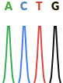
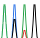
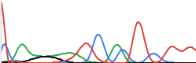
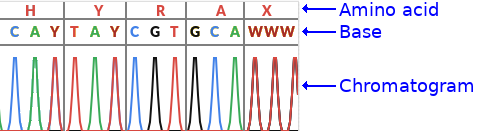
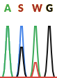
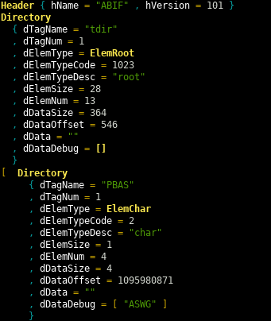
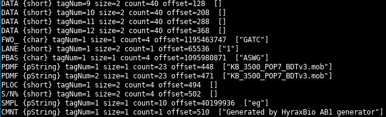
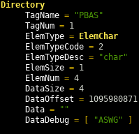
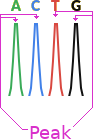
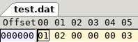

Parsing and generating ABIF files (DNA chromatograms)
Introduction
Hyrax ABIF is a Haskell package, that I created at HyraxBio to test our bioinformatics software pipeline. We have released the HyraxAbif package as open source (BSD3 licence) in the hopes that it will be useful to others.
In this post I’ll show how the package can be used as a standalone tool as well as looking at how the Haskell code works. Skip directly to the usage / ABIF format / Haskell sections if that is all you are interested in reading about.
Licence
See the LICENCE file. Please note that this package is distributed without warranties or conditions of any kind.
Chromatograms & some basic biology
Chromatograms
Part of what we do at HyraxBio is analyze DNA sequences to determine drug resistance for various pathogens. The first step in this process getting DNA data from a sequencing machine. The mechanics of sequencing are pretty complex. Fortunately for us we start with the data already sequenced which means that all the “wet-work” is done and we can analyse and interpret the results as data, i.e. bioinformatics.
DNA is made up of four bases A, C, G and T (adenine, cytosine, guanine, and thymine respectively). A sequencing machine takes DNA strands and determines the sequences of bases that are present. There is a fair amount of complexity here. You can’t simply grab a strand of DNA and read it in its entirety and certainly not with 100% accuracy (because biology). Rather the DNA is amplified and a consensus of reads for each position in the DNA strand is calculated. There can be both (many) variations of the same virus (mutations) as well as errors in the reading process itself. So each position is calculated based on which of the bases have the strongest signal per position.
ABIF files are generated by these sequencing machines by using chemical reactions that release a tiny amount of coloured light when a reagent reacts with one of the bases. Each base results in a different colour which enables the machine to detect which base is present DNA. The details behind this are fascinating see e.g. wikipedia for more detail if you are interested.
Below is a section of a chromatogram showing a wave for each of the four bases.

This is a perfect chromatogram, there are often multiple possibilities per position of different intensity. In the image below you can see that the second and third positions have more than one possible base, this is called a mix.

Even that is an unnaturally clean chromatogram. In reality they often look more like this, and take complicated base calling software and/or trained lab workers (or overworked PHD students) to decide on what base is actually represented.

The chromatogram data in ABIF format is fed into base calling software like PHRED and/or recall which analyze the chromatogram and decide on which base to call per position. The result being a string of bases (A/C/G/T).
Why we created hyraxAbif
Testing a full bioinformatics pipeline is critical to ensuring that every step works correctly and results in high quality outputs. The problem is that we could find no practical existing way to generate our own chromatograms (ABIFs). It is possible to use a set of existing ABIF files but this has two major problems
- These are DNA sequences from real people so there are confidentiality issues
- More practically, we needed very specific input data to test decisions further down the pipeline and finding real data with the exact mutations and no others is not realistic.
HyraxABIF was created to resolve this. It lets us easily create chromatograms from a DNA sequence and thus do all the testing we need to.
A bit more biology

The image above has a bit more detail, it shows the bases including ambiguous ones as well as the amino acids.
Ambiguous bases
As discussed above there could be multiple possibilities per position. The IUPAC ambiguity codes (see wikipedia ) or bioinformatics.org are a way of encoding the ambiguity in a single letter. For example a Y IUPAC code means that the base is either a C or a T.
Amino acids
Each group of three nucleotide bases is called a codon and encodes for a single amino acid (in coding regions…). The chromatogram also shows the amino acid per codon. This is not important to know for this post but may help if you see other pictures of other chromatograms as this will usually be show.
Using the application
HyraxAbif’s primary goal was for generating chromatograms from an input DNA sequence. It can be installed from hackage with cabal, from stack, or by cloning the git repo.
Generating a simple ABIF
The input for generating a chromatogram is a simplified FASTA format file. These files look like this
> 1
ACTGThe first line is the weight (more on this later), the second is the DNA sequence. Given this input file you would run
hyraxAbif-exe gen inputDir/ outputDir/
and you would end up with a ABIF file and a chromatogram like this
For many scenarios this is all you’ll need. You create a folder of FASTA input files and get a folder of generated corresponding ABIF files.
Generating more complex chromatograms
You can also generate chromatograms with mixes. The first line has the weight for the sequence, and each FASTA file can contain multiple reads.
> weight
read
> weight
read- The weight is a numeric value between 0 and 1 that specifies the weight of the current read i.e. the intensity of the peak.
- No other header/name is allowed (no quality data / naming etc)
- The read is the set of input nucleotides, IUPAC ambiguity codes are supported (MRWSYKVHDBNX).
- A read can be single or multi-line
- Weights for each position are summed to a maximum of 1.0 per nucleotide
- You can use _ as a “blank” nucleotide, in which case only the nucleotides from other reads will be considered
- Reads need not be the same length
For example
> 0.5
ACG
> 0.3
AAAA
> 1
__ACResults in the following weighted nucleotide per position
| position | A | C | G | T |
|---|---|---|---|---|
| 0 | 0.5 + 0.3 = 0.8 | 0 | 0 | 0 |
| 1 | 0.3 | 0.5 | 0 | 0 |
| 2 | 0.3 + 1 = 1.0 | 0 | 0.5 | 0 |
| 3 | 0.3 | 1 | 0 | 0 |
Note that 0.3 + 1.0 = 1.0 because the max value is 1.0
And this sample
> 1
ACAG
> 0.3
_GT
> 0.2
_Gresults in this chromatogram

The IUPAC codes here are
S=GorCW=AorT
Reverse reads
A weighted FASTA can represent a reverse read. To do this add a R suffix to the weight. The data you enter should be entered as if it was a forward read. This data will be complemented and reversed before writing to the ABIF
> 0.9R
ACAGwhich results in the sequence TGTC
Dumping an existing ABIF file
You can also dump an existing ABIF file
hyraxAbif-exe dump sample.abif
This prints two views of the file. First a detail view, partially show below

and then a summary

For certain types of data (e.g. strings) the parsed value is displayed.
The ABIF file format
The ABIF format is documented here. As you can see from the spec the ABIF format was modeled after the TIFF format. This means that there is a directory of entries and each entry has a data type.
The spec is quite thorough and explains the layout well. If you are wanting to understand the format it is your best starting point. The spec, however, only goes into detail on the ABIF structure. It does not go into much detail on how the chromatogram data itself is stored, I’ll cover that here.
In the file after the ABIF header and version number is the root directory entry. This entry points to the first of the data directory entries that can be located at any other location in the file.
Each directory entry has an offset to the location of its data in the file, the data size, the element size and number of entries. See the spec or the discussion of the Haskell code below for more details on each field.
Note that for data with a size of four bytes or less, the data is stored in the offset field itself.

Important ABIF directory entries
Towards the end of the spec are examples of the layout of ABIF files for a few sequencing machines. Lets take a look at some of these for the 3500 layout.
Chromatogram traces
| Type | Tag Number | Contains |
|---|---|---|
| DATA | 1 - 4 | The raw data per base (channel). The order of the bases is specified by the FWO_ entry |
| DATA | 5 | Short Array holding measured volts/10 (EP voltage) during run |
| DATA | 6 | Short Array holding measured milliAmps trace (EP current) during run |
| DATA | 7 | Short Array holding measured milliWatts trace (Laser EP Power) during |
| DATA | 8 | Short Array holding measured oven Temperature (polymer temperature) trace during run |
| DATA | 9 - 12 | Short Array holding analyzed color data |
This is a pretty intimidating set of values we thought we would have to generate from a FASTA input, just for the traces. Fortunately through trial and error we were able to see that only a small subset of the entries were required for the base calling software we were using (PHRED + Recall). All we needed to generate were the data sections 9 to 12, i.e. one per base, the analyzed colour data.
The four DATA sections we need to generate (entries 9 through 12) contain an array of shorts. Each short represents the intensity of the light for that base at a given point. Each of these DATA sections have the wave of the light intensity over time. The FWO_ directory entry specifies which base each DATA entry represents. We always generate it in the 3500 format, so the order is 9=G, 10=A, 11=T, 12=C.
Peak location
The traces above are just the wave form, the PLOC entry specifies the location of each peak. This is the location, across all four DATA entries, where the peak of the waves should be found. There is a single PLOC entry for all four DATA entries.

Other required entries
The other required entries are easy to generate, they are things like the base order (FWO_), file name (PDMF) and called based (PBAS). See the Haskell code discussion below to see them all.
Generating the waveforms
Given a base, we then need to create a wave and a single peak location entry. The data we use for each wave is this array of shorts [0, 0, 128, 512, 1024, 1024, 512, 128, 0, 0] which creates a wave like this.
The peak is the middle of the wave, nice and simple.
Again see the code discussion for more details in this.
Using the code, some basic examples
Reading and printing the ABIF structure
{-# LANGUAGE NoImplicitPrelude #-}
{-# LANGUAGE OverloadedStrings #-}
module Examples.ReadAb1 where
import Protolude
import qualified Hyrax.Abif.Read as H
-- | Read and print a ABIF file
readAbif :: IO ()
readAbif = do
abif' <- H.readAbif "example.ab1"
case abif' of
Left e -> putStrLn $ "error reading ABIF: " <> e
Right abif ->
-- Print after removing the data, to make it readable
print $ H.clearAbif abifreadAbiftries to parse an ABIF file, it returns anEither Text Abif- Check if the file was parsed successfully
- If not (Left) then print the error
- If successful (Right) then
clearAbifremoves all the raw data. If you don’t do this then all the massive byte arrays will get printed tooprintthe result.
The functions are all commented and visible on hackage.
Adding a comment to an existing ABIF
{-# LANGUAGE NoImplicitPrelude #-}
{-# LANGUAGE OverloadedStrings #-}
module Examples.AddComment where
import Protolude
import qualified Hyrax.Abif.Read as H
import qualified Hyrax.Abif.Write as H
-- | Add a comment to an existing AB1 file
addComment :: IO ()
addComment = do
abif' <- H.readAbif "example.ab1"
case abif' of
Left e -> putStrLn $ "error reading ABIF: " <> e
Right abif -> do
let modified = H.addDirectory abif $ H.mkComment "new comment"
H.writeAbif "example.modified.ab1" modifiedOnly the Right case is different than the previous example
addDirectoryis called to add a new comment directory entry that is created bymkCommentwriteAbifwrites the updated file to disk
More examples
The Examples directory contains more examples. You can also look at the Generate and Main modules to see how the code is used.
Understanding the code
Data.Binary
Data.Binary is used to read and write the raw bytes in the ABIF files.
Writing
Below is an example of writing two Int8 and an Int32 value.
{-# LANGUAGE NoImplicitPrelude #-}
{-# LANGUAGE OverloadedStrings #-}
module Main where
import Protolude
import qualified Data.Binary.Put as B
import qualified Data.ByteString.Lazy as BSL
main :: IO ()
main = do
let outData = B.runPut testWrite
BSL.writeFile "test.dat" outData
where
testWrite :: B.PutM ()
testWrite = do
B.putInt8 1
B.putInt8 2
B.putInt32be 3runPut “runs” the PutM monad. testWrite can then simply call the put* functions to write the data in whatever format is required.
This creates a file that looks like this

Reading
Reading the data from the file looks like this
{-# LANGUAGE NoImplicitPrelude #-}
{-# LANGUAGE OverloadedStrings #-}
module Main where
import Protolude
import qualified Data.Binary.Get as B
import qualified Data.ByteString.Lazy as BSL
main :: IO ()
main = do
inData <- BSL.readFile "test.dat"
let read = B.runGet testRead inData
print read
where
testRead :: B.Get (Int8, Int8, Int32)
testRead = do
a <- B.getInt8
b <- B.getInt8
c <- B.getInt32be
pure (a, b, c)runGet is given the ByteString from the file and testRead gets the values in the appropriate format.
If you prefer applicatives you could instead have written testGet as
and testWrite as
ABIF Types
Hyrax.Abif contains the core types for the package
src/Hyrax/Abif.hs (22 to 32)
module Hyrax.Abif
( Abif (..)
, Header (..)
, Directory (..)
, ElemType (..)
, getElemType
, describeElemType
) where
import Protolude
import qualified Data.ByteString.Lazy as BSLsrc/Hyrax/Abif.hs (37 to 64)
-- | A single ABIF
data Abif = Abif { aHeader :: !Header
, aRootDir :: !Directory
, aDirs :: ![Directory]
} deriving (Show, Eq)
-- | ABIF header
data Header = Header { hName :: !Text
, hVersion :: !Int
} deriving (Show, Eq)
-- | ABIF directory entry.
-- The 'dData' field contains the data for the entry
data Directory = Directory { dTagName :: !Text -- ^ Tag name
, dTagNum :: !Int -- ^ Tag number, see e.g. how DATA entries use this
, dElemType :: !ElemType -- ^ Type of an element
, dElemTypeCode :: !Int -- ^ Integer value of 'dElemType'
, dElemTypeDesc :: !Text -- ^ Description of 'dElemType'
, dElemSize :: !Int -- ^ Size in bytes of each element
, dElemNum :: !Int -- ^ Number of elements in the data. See the spec per data type. E.g. for a string this is the number of characters
, dDataSize :: !Int -- ^ Number of bytes in the data
, dDataOffset :: !Int -- ^ Offset of this directory entry's data in the file. For data that is four
-- bytes or less, the data itself is stored in this field.
-- This value will be recalculated when writing an ABIF so you do not need to manually set it.
, dData :: !BSL.ByteString -- ^ The entry's data
, dDataDebug :: ![Text] -- ^ Optinal debug data, populated by 'Hyrax.Abif.Read.getDebug' when a ABIF is parsed
} deriving (Show, Eq)These three types make up most of what we need to represent an ABIF. A few things to notice
- The root directory in the
Abiftype will point to the array ofDirectoryentries dElemTypeCodeis the integer value read from the file (see the spec for the codes).dElemTypeanddElemTypeDescare interpreted values from thisdElemSizeanddElemOffsetare read from the file, but are automatically calculated when writing (see the Hyrax.Abif.Write section below)dDatais the actual raw data read from the file, or data to be written to an ABIF filedDataDebugis populated while reading the file and used during dumping to give human readable info about the file being inspected.
Element types
The remaining code is the definition of ElemType and functions for interpreting the raw element type integer value. Note that the spec defines a number of unsupported data types, these are included here.
Hyrax.Abif.Read
Starting the read
readAbif calls getAbif to parse the data
src/Hyrax/Abif/Read.hs (51 to 53)
-- | Read and parse an AB1 file
readAbif :: FilePath -> IO (Either Text Abif)
readAbif path = getAbif <$> BSL.readFile pathgetAbif starts the parsing of the Abif data structure.
src/Hyrax/Abif/Read.hs (58 to 75)
-- | Parse an AB1 from a 'ByteString'
getAbif :: BSL.ByteString -> Either Text Abif
getAbif bs = do
(header, rootDir) <- case B.runGetOrFail (getRoot bs) bs of
Right (_, _, x) -> pure x
Left (_, _, e) -> Left ("Error reading root: " <> Txt.pack e)
let dirBytes = BSL.drop (fromIntegral $ dDataOffset rootDir) bs
ds <- case B.runGetOrFail (getDirectories bs [] $ dElemNum rootDir) dirBytes of
Right (_, _, x) -> pure x
Left (_, _, e) -> Left ("Error reading "
<> show (dElemNum rootDir)
<> " directories (at " <> show (dDataOffset rootDir) <> "): "
<> Txt.pack e
)
pure $ Abif header rootDir ds- The
Eithermonad is used so anyLeftvalue will short-circuit out of the function and return theLeftvalue immediately. Data.Binary.runGetOrFailreturns aLeftif the get operation fails. Much better than getting an exception as you would withrunGet- The first step is to read the header and the root directory
- Then the ABIF directory entries are read. These directories are found at the offset specified in the root directory. The code “goes” to this offset by dropping the number of bytes from the read data.
getDirectoriesreads the number of directory entries specified by the root entry.
getRoot gets the header and root directory (see next section)
src/Hyrax/Abif/Read.hs (218 to 223)
-- | Parse the root ('Header' and 'Directory')
getRoot :: BSL.ByteString -> B.Get (Header, Directory)
getRoot bs = do
h <- getHeader
rd <- getDirectory bs
pure (h, rd)getHeader gets the “ABIF” magic string and version number. Similar to the read example above.
src/Hyrax/Abif/Read.hs (209 to 213)
-- | Parse the ABIF 'Header'
getHeader :: B.Get Header
getHeader =
Header <$> (TxtE.decodeUtf8 <$> B.getByteString 4)
<*> (fromIntegral <$> B.getInt16be)Reading directories
getDirectories is given the number of directories to read. It tries to read a single Directory by calling getDirectory and then recursively calls itself until done.
src/Hyrax/Abif/Read.hs (272 to 279)
-- | Parse all the directoy entries
getDirectories :: BSL.ByteString -> [Directory] -> Int -> B.Get [Directory]
getDirectories _ acc 0 = pure acc
getDirectories bs acc more = do
d <- getDirectory bs
B.skip 4 -- Skip the reserved field
getDirectories bs (acc <> [d]) (more - 1)
Reading and individual directory is done by getDirectory.
- Read the values and convert into appropriate types (e.g. Int8 to Int)
- If the data is four bytes or less then the offset field contains the data
- If the data is larger than four bytes, go to the offset and read the entire chunk as a
ByteString. - Create a
Abifvalue
src/Hyrax/Abif/Read.hs (228 to 267)
-- | Parse a single 'Directory' entry and read its data
getDirectory :: BSL.ByteString -> B.Get Directory
getDirectory bs = do
tagName <- TxtE.decodeUtf8 <$> B.getByteString 4
tagNum <- fromIntegral <$> B.getInt32be
typeCode <- fromIntegral <$> B.getInt16be
elemSize <- fromIntegral <$> B.getInt16be
elemNum <- fromIntegral <$> B.getInt32be
dataSize <- fromIntegral <$> B.getInt32be
offsetDataBytes <- B.lookAhead $ B.getLazyByteString 4
dataOffset <- fromIntegral <$> B.getInt32be
-- Read the data
-- Data that is 4 bytes or less is stored in the offset field
dataBytes <- if dataSize <= 4
then pure $ BSL.take (fromIntegral dataSize) offsetDataBytes
else case B.runGetOrFail (B.getLazyByteString $ fromIntegral dataSize) $ BSL.drop (fromIntegral dataOffset) bs of
Right (_, _, x) -> pure x
Left (_, _, e) -> fail $ "error reading data ("
<> show dataSize
<> " bytes starting at "
<> show dataOffset
<> ") for directory entry '"
<> Txt.unpack tagName
<> "': "
<> e
let (elemType, elemCode) = describeElemType typeCode
pure Directory { dTagName = tagName
, dTagNum = tagNum
, dElemTypeCode = typeCode
, dElemTypeDesc = elemCode
, dElemType = elemType
, dElemSize = elemSize
, dElemNum = elemNum
, dDataSize = dataSize
, dDataOffset = dataOffset
, dData = dataBytes
, dDataDebug = []
} Reading strings
- A
PStringis prefixed with anInt8size. So read the size and then the string - A
CStringis null terminated, so read all the data for the length of the string (from the directory entry) and drop the final null character.
src/Hyrax/Abif/Read.hs (194 to 204)
-- | Parse a 'ElemPString'
getPString :: B.Get Text
getPString = do
sz <- fromIntegral <$> B.getInt8
TxtE.decodeUtf8 <$> B.label ("PString length=" <> show sz <> ".") (B.getByteString sz)
-- | Parse a 'ElemCString'
getCString :: Int -> B.Get Text
getCString sz =
TxtE.decodeUtf8 <$> B.getByteString (sz - 1)Debug info
getDebug adds human readable information for some types, e.g. for strings. This lets us print the Abif structure to the console with some useful data. Only a portion of getDebug is show here as it is a little repetitive. However it is a good function to look at to see more examples of reading the raw data.
src/Hyrax/Abif/Read.hs (94 to 112)
-- | Populate the directory entry with debug data (into 'dDataDebug').
-- This is done for selected types only, e.g. for strings so that printing the structure will display
-- readable/meaningfull info
getDebug :: Directory -> Directory
getDebug d =
let bsAtOffset = dData d in
case dElemType d of
-- Strings have a count = number of chars, not number of "strings"
ElemPString ->
if dDataSize d <= 4
then d { dDataDebug = [TxtE.decodeUtf8 . BSL.toStrict . BSL.drop 1 . BSL.take (fromIntegral $ dDataSize d) $ dData d] }
else d { dDataDebug = [B.runGet (lbl getPString) bsAtOffset] }
-- Strings have a count = number of chars, not number of "strings"
ElemCString ->
if dDataSize d <= 4
then d { dDataDebug = [TxtE.decodeUtf8 . BSL.toStrict . BSL.take (fromIntegral $ dDataSize d - 1) $ dData d] }
else d { dDataDebug = [B.runGet (lbl . getCString $ dDataSize d) bsAtOffset] }When printing the structure it does not make sense to print all the raw data too. So the clear* functions remove that before printing
src/Hyrax/Abif/Read.hs (80 to 89)
-- | Removes all data from the ABIF's directories
clearAbif :: Abif -> Abif
clearAbif a = a { aRootDir = clear $ aRootDir a
, aDirs = clear <$> aDirs a
}
-- | Removes all data from a directory entry. This will probably only be useful when trying to show an ABIF value
clear :: Directory -> Directory
clear d = d { dData = "" }Hyrax.Abif.Write
As with the read functions there are two write functions for writing to ByteString or to a file.
src/Hyrax/Abif/Write.hs (54 to 64)
-- | Write an 'Abif' to a 'ByteString'
createAbifBytes :: Abif -> BSL.ByteString
createAbifBytes ab1 =
B.runPut (putAbif ab1)
-- | Write an 'Abif' to a file
writeAbif :: FilePath -> Abif -> IO ()
writeAbif destPath ab1 = do
let b = createAbifBytes ab1
BS.writeFile destPath $ BSL.toStrict bWriting the ABIF data is relatively simple since each directory entry already contains the ByteString raw data. putAbif does need to recalculate the data size though
src/Hyrax/Abif/Write.hs (69 to 98)
-- | Create the 'Abif' using "Data.Binary"
putAbif :: Abif -> B.Put
putAbif (Abif header root dirs) = do
-- Total data size
let dataSize = foldl' (\acc i -> if i > 4 then acc + i else acc) 0 $ dDataSize <$> dirs
-- Write the header
putHeader header
-- Data starts at offset 128
let startDataOffset = 128
-- Write the root directory entry
putDirectory (startDataOffset + dataSize) $ root { dDataSize = 28 * length dirs
, dElemNum = length dirs
}
-- Write 47 zero Int16 values as required by the spec
traverse_ B.putInt16be $ replicate 47 0
-- Write the data, for all data larger than four bytes. Data four bytes or less is stored
-- in the offset field
traverse_ (B.putLazyByteString . dData) $ filter (\d -> dDataSize d > 4) dirs
-- Write the directory entries.
foldM_ writeDir startDataOffset dirs
where
writeDir offset dir = do
putDirectory offset dir
pure $ if dDataSize dir > 4
then offset + dDataSize dir
else offset- The total data size is calculated. It is the sum of all the non-root directory entries where the data is not stored in the offset field (i.e. where data size > 4 bytes)
- The data will starting being written at offset 128, i.e. immediately after the header and root directory entry
- Add the root directory
- Write the 47 zeros required by the spec
- Write all the data from each of the directory entries
- Write the directory entries, incrementing the offset for each entry with data > 4 bytes
Header
Writing the header is pretty simple, write the magic string and version number.
src/Hyrax/Abif/Write.hs (117 to 121)
-- | Write a 'Header'
putHeader :: Header -> B.Put
putHeader h = do
putTextStr $ hName h
B.putInt16be . fromIntegral $ hVersion hStrings
There are two functions for writing Text values
src/Hyrax/Abif/Write.hs (103 to 112)
-- | Write 'Text'
putTextStr :: Text -> B.Put
putTextStr t = B.putByteString $ TxtE.encodeUtf8 t
-- | Write a 'ElemPString'
putPStr :: Text -> B.Put
putPStr t = do
B.putInt8 . fromIntegral $ Txt.length t
B.putByteString $ TxtE.encodeUtf8 tDirectory
When writing a directory there a few things to take care of
- Ensure that the directory name is exactly 4 bytes long
- Write the offset for data > 4 bytes
- Write the data to the offset field if it is <= 4 bytes, ensure it is exactly 4 bytes long on disk
- Append the reserved zero value
src/Hyrax/Abif/Write.hs (126 to 142)
-- | Write a 'Directory'
putDirectory :: Int -> Directory -> B.Put
putDirectory dirOffset d = do
let name = Txt.justifyLeft 4 ' ' . Txt.take 4 $ dTagName d
putTextStr name
B.putInt32be . fromIntegral $ dTagNum d
B.putInt16be . fromIntegral $ dElemTypeCode d
B.putInt16be . fromIntegral $ dElemSize d
B.putInt32be . fromIntegral $ dElemNum d
B.putInt32be . fromIntegral $ dDataSize d
-- data with a size >= 4 are written in the offset
if dDataSize d > 4
then B.putInt32be . fromIntegral $ dirOffset
else B.putLazyByteString . BSL.take 4 $ dData d <> "\0\0\0\0"
B.putInt32be 0 -- reserved / datahandlemk* helper functions
The mk* set of functions help in constructing valid directory entries.
Below are two of these functions
mkBaseOrderwhich creates a FWO_ Directory entry.mkLanewhich creates a LANE Directory entry.
As you can see these functions take appropriately typed values in and produce a valid directory entry for the data and directory type. (See Hyrax.Abif.Generate to see them in use)
src/Hyrax/Abif/Write.hs (48 to 49)
-- | Used to specify the base order for the FWO directry entry, see 'mkBaseOrder'
data Base = BaseA | BaseC | BaseG | BaseTsrc/Hyrax/Abif/Write.hs (208 to 244)
-- | Create a base order (FWO_) 'Directory' entry data
mkBaseOrder :: Base -> Base -> Base -> Base -> Directory
mkBaseOrder w x y z =
Directory { dTagName = "FWO_" -- Base order
, dTagNum = 1
, dElemTypeCode = 2
, dElemTypeDesc = "char"
, dElemType = ElemChar
, dElemSize = 1
, dDataOffset = 0
, dDataDebug = []
, dData = getBase w <> getBase x <> getBase y <> getBase z
, dDataSize = 4
, dElemNum = 4
}
where
getBase BaseA = "A"
getBase BaseC = "C"
getBase BaseG = "G"
getBase BaseT = "T"
-- | Create a lane (LANE) 'Directory' entry and data
mkLane :: Int16 -> Directory
mkLane lane =
Directory { dTagName = "LANE" -- Lane or capliary number
, dTagNum = 1
, dElemTypeCode = 4
, dElemTypeDesc = "short"
, dElemType = ElemShort
, dElemSize = 2
, dElemNum = 1
, dDataSize = 2
, dDataOffset = 0
, dData = B.runPut $ B.putInt16be lane
, dDataDebug = []
}See the code or haddock for the full set of mk* functions.
Adding a directory
addDirectory appends a directory entry to an existing Abif. See the examples to see this in use.
src/Hyrax/Abif/Write.hs (346 to 349)
-- | Add a directory to an 'Abif'
addDirectory :: Abif -> Directory -> Abif
addDirectory abif dir =
abif { aDirs = aDirs abif <> [dir] }Hyrax.Abif.Generate and Hyrax.Abif.Fasta
Generating ABIFs is the main purpose of this package and the code to do this is in Hyrax.Abif.Generate. There is less than 200 lines of code, but I’ll go through how it works in some detail.
generateAb1 is the main function in this module, it controls the flow of generating a single ABIF. It has the following high level concerns
- Generate the traces per base from the weighted FASTA
- Generate the peak locations
- Generate the directories
- Create the ABIF
src/Hyrax/Abif/Generate.hs (131 to 171)
-- | Create the 'ByteString' data for an AB1 given the data from a weighted FASTA (see 'readWeightedFasta')
generateAb1 :: (Text, [(Double, Text)]) -> BSL.ByteString
generateAb1 (fName, sourceFasta) =
let
tr = generateTraceData sourceFasta
valsPerBase = trValsPerBase tr
generatedFastaLen = (Txt.length $ trFasta tr)
-- The point that is the peak of the trace, i.e. mid point of trace for a single base
midPeek = valsPerBase `div` 2
-- Get the peak locations for all bases
peakLocations = take generatedFastaLen [midPeek, valsPerBase + midPeek..]
-- Sample name (from the FASTA name)
sampleName = fst . Txt.breakOn "_" $ fName
-- Create the ABIF directories
dirs = [ mkData 9 $ trData09G tr -- G
, mkData 10 $ trData10A tr -- A
, mkData 11 $ trData11T tr -- T
, mkData 12 $ trData12C tr -- C
, mkBaseOrder BaseG BaseA BaseT BaseC -- Base order, should be GATC for 3500
, mkLane 1 -- Lane or capliary number
, mkCalledBases $ trFasta tr -- Called bases
, mkMobilityFileName 1 "KB_3500_POP7_BDTv3.mob" -- Mobility file name
, mkMobilityFileName 2 "KB_3500_POP7_BDTv3.mob" -- Mobility file name
, mkPeakLocations $ fromIntegral <$> peakLocations -- Peak locations
, mkDyeSignalStrength 53 75 79 48 -- Signal strength per dye
, mkSampleName sampleName -- Sample name
, mkComment "Generated by HyraxBio AB1 generator"
]
-- The ABIF
abif = Abif { aHeader = mkHeader
, aRootDir = mkRoot
, aDirs = dirs
}
in
-- Generate the data
B.runPut (putAbif abif)A quick detour - Reading the weighted FASTA
readWeightedFasta reads the contents of a single weighted .fasta file. (Unless you are interested in how the FASTA parsing works, you can skip this and go to the next section. Just have a look at what the types represent).
The parsed content has the type [('Double', 'Text')], which stores the data like this
[('Double', 'Text')]
^ ^
| |
| +---- read
|
+---- weight i.e. an array of weights together with the sequence at that weight.
src/Hyrax/Abif/Generate.hs (265 to 290)
readWeightedFasta :: ByteString -> Either Text [(Double, Text)]
readWeightedFasta fastaData =
case parseFasta $ TxtE.decodeUtf8 fastaData of
Left e -> Left e
Right fs -> getWeightedFasta fs
where
getWeightedFasta :: [Fasta] -> Either Text [(Double, Text)]
getWeightedFasta fs =
case sequenceA $ readWeighted <$> fs of
Left e -> Left e
Right r -> Right r
readWeighted :: Fasta -> Either Text (Double, Text)
readWeighted (Fasta hdr' dta) =
let (processNucs, hdr) =
-- If there is a 'R' suffix, then generate a reverse sequence
-- Which means complement each nucleotide and then reverse the string
if Txt.isSuffixOf "R" hdr'
then (Txt.reverse . complementNucleotides, Txt.strip . Txt.dropEnd 1 $ hdr')
else (identity, hdr')
in
case (readMaybe . Txt.unpack $ hdr :: Maybe Double) of
Just weight -> Right (min 1 . max 0 $ weight, processNucs $ Txt.strip dta)
Nothing -> Left $ "Invalid header reading, expecting numeric weight, got: " <> hdrThe FASTA is read and parsed in Hyrax.Abif.Fasta. Note that readWeighted handles the reverse read logic by calling complementNucleotides and then reversing the string. This section of the code is not entirely relevant for this discussion of the ABIF generation so I wont spend much time on it.
src/Hyrax/Abif/Generate.hs (391 to 406)
-- | Return the complement of a nucelotide string
complementNucleotides :: Text -> Text
complementNucleotides ns =
let
un = unIupac <$> Txt.unpack ns
comp = complementNuc <<$>> un
iu = iupac comp
in
Txt.pack iu
where
complementNuc 'A' = 'T'
complementNuc 'G' = 'C'
complementNuc 'T' = 'A'
complementNuc 'C' = 'G'
complementNuc x = xsrc/Hyrax/Abif/Fasta.hs (23 to 51)
-- | FASTA data
data Fasta = Fasta { fastaName :: !Text -- ^ Name
, fastaRead :: !Text -- ^ Data
} deriving (Show, Eq)
-- | Parse the data for a single FASTA into a list of 'Fasta' values.
-- Single and multi-line FASTAs are supported.
-- Used by "Hyrax.Abif.Generate" to read weighted-FASTAs
parseFasta :: Text -> Either Text [Fasta]
parseFasta s =
reverse <$> go (Txt.lines s) Nothing "" []
where
go :: [Text] -> Maybe Text -> Text -> [Fasta] -> Either Text [Fasta]
go (line:lines) (Just name) read acc =
if Txt.take 1 line /= ">"
then go lines (Just name) (read <> line) acc
else go lines (Just $ Txt.drop 1 line) "" (Fasta (Txt.strip name) read : acc)
go (line:lines) Nothing _read acc =
if Txt.take 1 line == ">"
then go lines (Just $ Txt.strip . Txt.drop 1 $ line) "" acc
else Left "Expecting name"
go [] Nothing _ acc =
Right acc
go [] (Just _name) "" _acc =
Left "Expecting read"
go [] (Just name) read acc =
Right $ Fasta (Txt.strip name) read : accreadWeightedFastas reads all the FASTA files from a directory and returns a tuple of ( file-name, f ) where f is [('Double', 'Text')] as described above.
src/Hyrax/Abif/Generate.hs (296 to 317)
-- | Read all FASTA files in a directory
--
-- The result data has the type
--
-- @
-- [ ('Text', [('Double', 'Text')]) ]
-- ^ ^ ^
-- | | |
-- file name -------------+ | +---- read
-- |
-- +---- weight
-- @
--
readWeightedFastas :: FilePath -> IO (Either Text [(Text, [(Double, Text)])])
readWeightedFastas source = do
files <- filter (Txt.isSuffixOf ".fasta" . Txt.pack) <$> getFiles source
let names = Txt.pack . FP.takeBaseName <$> files
contents <- traverse BS.readFile files
case sequenceA $ readWeightedFasta <$> contents of
Left e -> pure . Left $ e
Right rs -> pure . Right $ zip names rsGenerating the trace data
generateTraceData does the bulk of the work in the ABIF data generation
src/Hyrax/Abif/Generate.hs (181 to 183)
-- | Generate the traces for the AB1 from the parsed weighted FASTA
generateTraceData :: [(Double, Text)] -> TraceData
generateTraceData weighted =src/Hyrax/Abif/Generate.hs (187 to 188)
weightedNucs' = (\(w, ns) -> (w,) . unIupac <$> Txt.unpack ns) <$> weighted
weightedNucs = Lst.transpose weightedNucs'Lets break (\(w, ns) -> (w,) . unIupac <$> Txt.unpack ns) <$> weighted down a bit
- Its running a lambda for each weighted element
- So
lambda <$> weighted - Weighted has the type
[(Double, Text)]as discussed above - The lambda takes the params
\(w, ns). I.e. it destuctures a tuple from the array and gets the weight and the string of nucleotides. - For each nucleotide
f <$> Txt.unpack nsfis(w,) . unIupac- So each nucleotide gets passed to
unIupac(as aText) and added to a tuple with the weigh, so (weight, [nucleotide])unIupactakes a possibly ambiguous nucleotide code and returns the list of nucleotides it represents. E.g.V->ACG
- So
- And then
List.transposeis called. This gives us all the nulceotides and weights per position
This code is perhaps a bit hard to follow, so here is an example showing how this would work for the weighted FASTA
>1
AC
>0.5
WK- The weighted fasta is parsed as
- Each of the nucleotides is passed to
unIupac, and sinceW=ATandK=GTwe get
- Finally, the list is transposed to get the weight and nucleotide per position
- position
0has anAwith weight 1 and anA/Twith weight 0.5 - position
1has aCwith weight 1 and aG/Twith weight 0.5
src/Hyrax/Abif/Generate.hs (192 to 195)
-- Values for a base that was present. This defines the shape of the chromatogram curve,
-- and defines the number of values per base
curve = [0, 0, 128, 512, 1024, 1024, 512, 128, 0, 0]
valsPerBase = length curveNext the shape of the curve is defined. A curve this shape, was selected as it has some space either side to avoid mixing with neighboring waves and a steep climb so that the peak is easily detectable.
src/Hyrax/Abif/Generate.hs (199 to 203)
-- Create the G, A, T and C traces
data09G = concat $ getWeightedTrace curve 'G' <$> weightedNucs
data10A = concat $ getWeightedTrace curve 'A' <$> weightedNucs
data11T = concat $ getWeightedTrace curve 'T' <$> weightedNucs
data12C = concat $ getWeightedTrace curve 'C' <$> weightedNucssrc/Hyrax/Abif/Generate.hs (224 to 232)
getWeightedTrace :: [Int] -> Char -> [(Double, [Char])] -> [Int16]
getWeightedTrace curve nuc ws =
let
found = filter ((nuc `elem`) . snd) ws
score' = foldl' (+) 0 $ fst <$> found
score = min 1 . max 0 $ score'
wave = floor . (score *) . fromIntegral <$> curve
in
wavegetWeightedTrace is then called for each of the four bases. For each position for a base it returns a curve. If the position does not have the base then the curve is flat (zeros), if it does the curve above is returned multiplied by the weight.
Again an example may make this easier to understand
let ns = [ [ (1.0, "A") -- Position 0
, (0.5, "AT")
]
,
[ (1.0, "C") -- Position 1
, (0.5, "GT")
]
]
let curve = [0, 100, 0]
let rA = getWeightedTrace curve 'A' <$> ns
print rA
let rG = getWeightedTrace curve 'G' <$> ns
print rG- We start with the same parsed FASTA as above
- We define a small curve as [0, 100, 0]
- We call
getWeightedTracefor theAandGbases
For A
- there is a
Aat position0with a total weight of1(remember max is 1.0) so the full curve is used - no
Aat position1
For G
- no
Gat position0 - there is a
Gat position1with a weight of0.5so each value in the wave is multiplied by 0.5
Notice that in the code above, these results are then concatenated so the actual results are
With that have a way to generate a wave form for the input weighted fasta
src/Hyrax/Abif/Generate.hs (207 to 209)
-- Create fasta sequence for the trace
fastaSeq = concat <$> (snd <<$>> weightedNucs)
fasta = Txt.pack $ iupac fastaSeqThe ABIF needs to store the called bases in the PBAS entry. We get the bases from the input data, IUPAC encode each position and we have the sequence.
src/Hyrax/Abif/Generate.hs (213 to 219)
TraceData { trData09G = data09G
, trData10A = data10A
, trData11T = data11T
, trData12C = data12C
, trFasta = fasta
, trValsPerBase = valsPerBase
}And return the TraceData value
For completeness here is the unIupac function
src/Hyrax/Abif/Generate.hs (329 to 352)
-- | Convert a IUPAC ambiguity code to the set of nucleotides it represents
unIupac :: Char -> [Char]
unIupac c =
case c of
'T' -> "T"
'C' -> "C"
'A' -> "A"
'G' -> "G"
'U' -> "T"
'M' -> "AC"
'R' -> "AG"
'W' -> "AT"
'S' -> "CG"
'Y' -> "CT"
'K' -> "GT"
'V' -> "ACG"
'H' -> "ACT"
'D' -> "AGT"
'B' -> "CGT"
'N' -> "GATC"
'X' -> "GATC"
_ -> ""Generating the peak locations
src/Hyrax/Abif/Generate.hs (140 to 143)
-- The point that is the peak of the trace, i.e. mid point of trace for a single base
midPeek = valsPerBase `div` 2
-- Get the peak locations for all bases
peakLocations = take generatedFastaLen [midPeek, valsPerBase + midPeek..]To generate the array of peak locations
- Take the midpoint of a single wave (which will always be the peak for the shape of the waves we have define)
- Create an array of positions that start from this point, per wave for the total length of the input data
Given a curve of [0, 10, 10, 0]
valsPerBase= the length of the curve = 4midPeak= 4 / 2 = 2- The peaks generated are
[2, 6, 10, 14, 18......, one element per length of the input FASTA. - This is the data that is stored in the
PLOCdirectory entry.
Generating the ABIF
We now have all the data we need, the mk* functions are used to generate the minimal set of directories
src/Hyrax/Abif/Generate.hs (150 to 170)
-- Create the ABIF directories
dirs = [ mkData 9 $ trData09G tr -- G
, mkData 10 $ trData10A tr -- A
, mkData 11 $ trData11T tr -- T
, mkData 12 $ trData12C tr -- C
, mkBaseOrder BaseG BaseA BaseT BaseC -- Base order, should be GATC for 3500
, mkLane 1 -- Lane or capliary number
, mkCalledBases $ trFasta tr -- Called bases
, mkMobilityFileName 1 "KB_3500_POP7_BDTv3.mob" -- Mobility file name
, mkMobilityFileName 2 "KB_3500_POP7_BDTv3.mob" -- Mobility file name
, mkPeakLocations $ fromIntegral <$> peakLocations -- Peak locations
, mkDyeSignalStrength 53 75 79 48 -- Signal strength per dye
, mkSampleName sampleName -- Sample name
, mkComment "Generated by HyraxBio AB1 generator"
]
-- The ABIF
abif = Abif { aHeader = mkHeader
, aRootDir = mkRoot
, aDirs = dirs
}And with that we can generate any test ABIF we need. The code is much shorter than the explanation. Hopefully with the guidance from this post and the code comments it should be easy enough to follow.
Testing
The package comes with property tests that test
- Weighted FASTA parsing
- Round tripping a ABIF, i.e. generated ABIF == generated + read + written + read
- That the peaks in a generated ABIF represent the expected nucleotide sequence.
We used Hedgehog for the property tests. It made writing the properties & generators (see the Generators module) really easy.
For more details see the property tests and the following Hedgehog links
Conclusion
Hopefully you find this package useful, either as a standalone tool or as a library. If you do we would love to hear how you are using it.
If you have any questions feel free to email me.
Thanks
Andre.
Links
- Code on github
- Latest code is on
masterbranch - Code for the blog is on the
blogbranch, commit =3fa4f873bcb54756d520f9d2f2cd4995aeccaa4c
- Latest code is on
- Comments thread on /r/haskell subreddit
- HyraxAbif package on hackage
- ABIF spec
- HyraxBio
- Hedgehog